Understanding the Universe
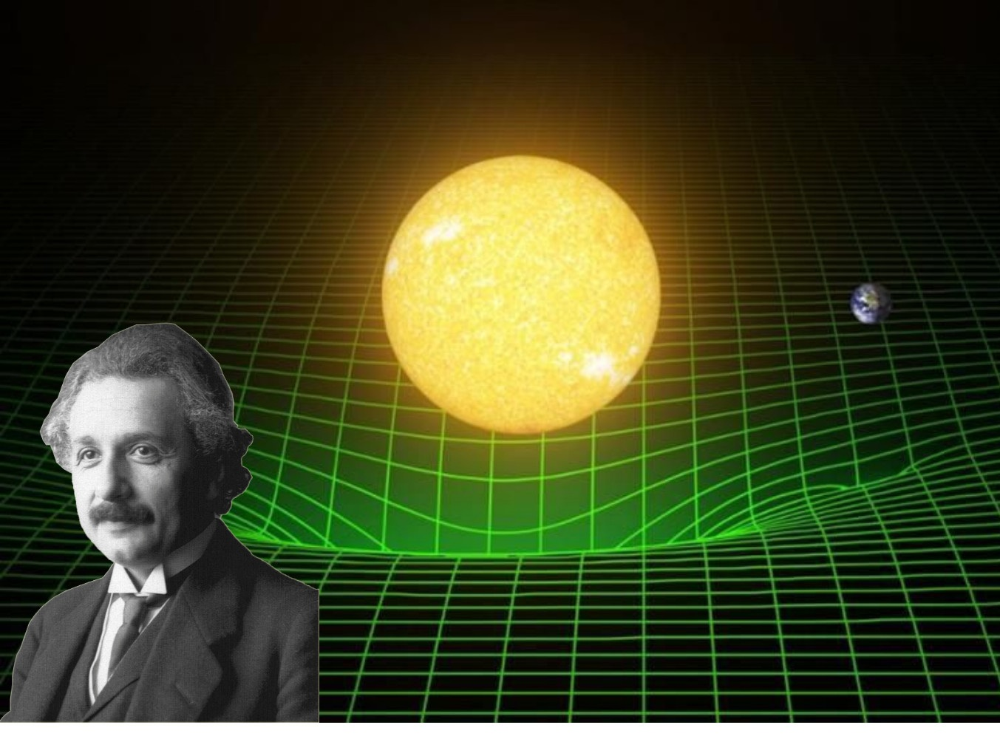
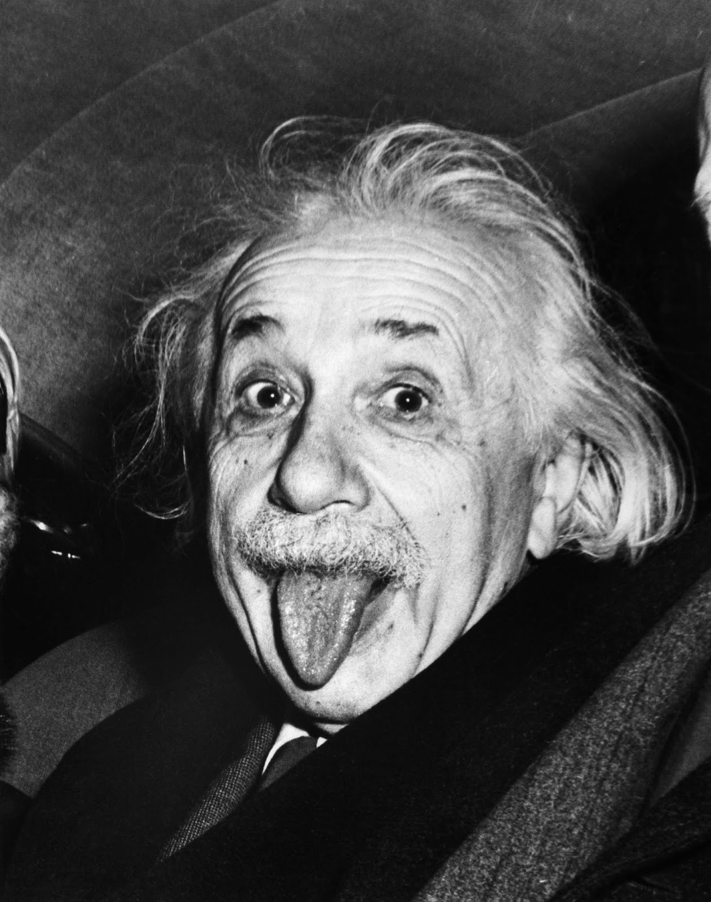
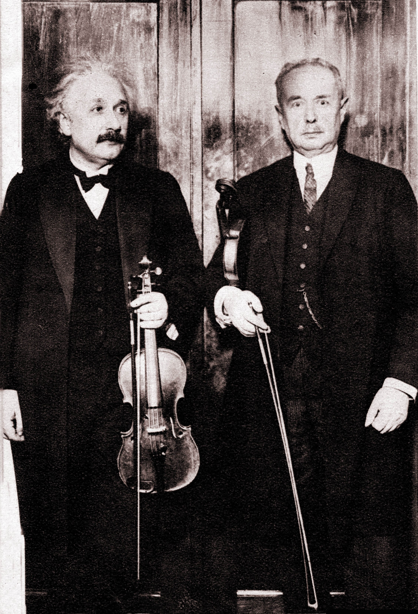
Einstein commonly enjoys playing the violin. He especially loves classical music, specfically Mozart and Bach.
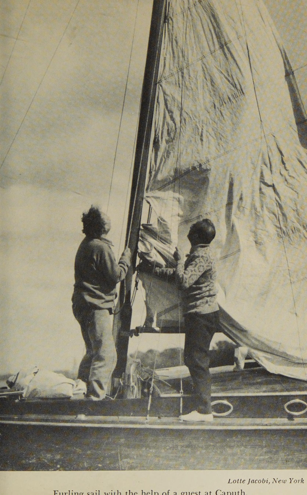
Einstein also commonly loves to sail. He is not the best at it, but he finds it quite relaxing.
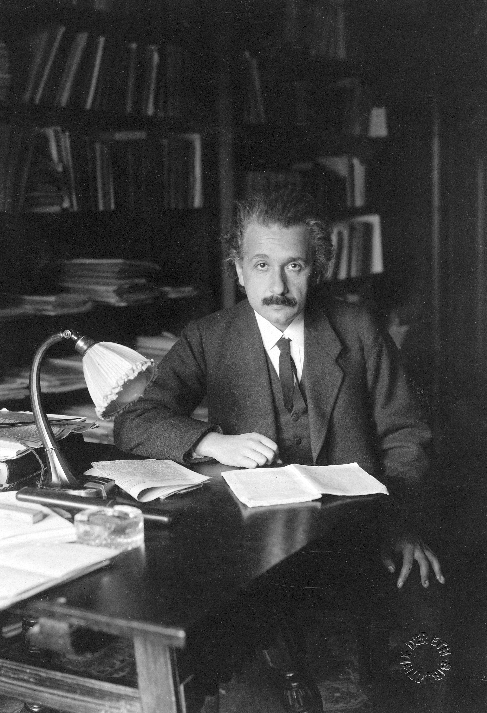
Einstein is quite the reader, especially when it comes to philosophy, science, and literature.
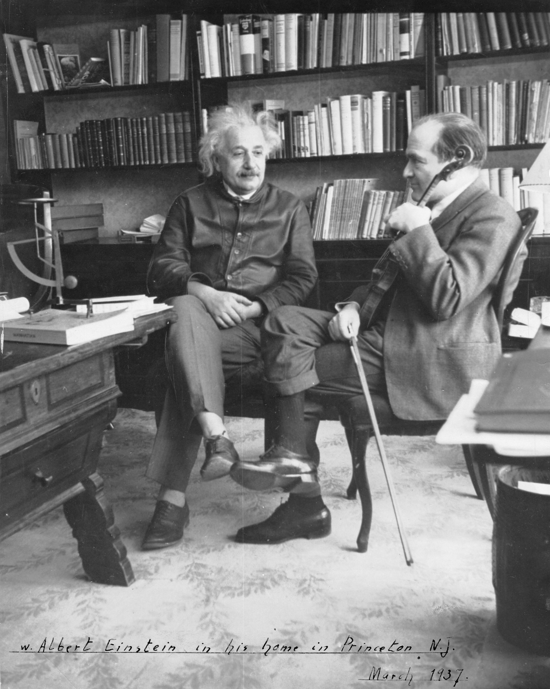
Einstein is also a piano player. He finds it to be a great creative outlet.

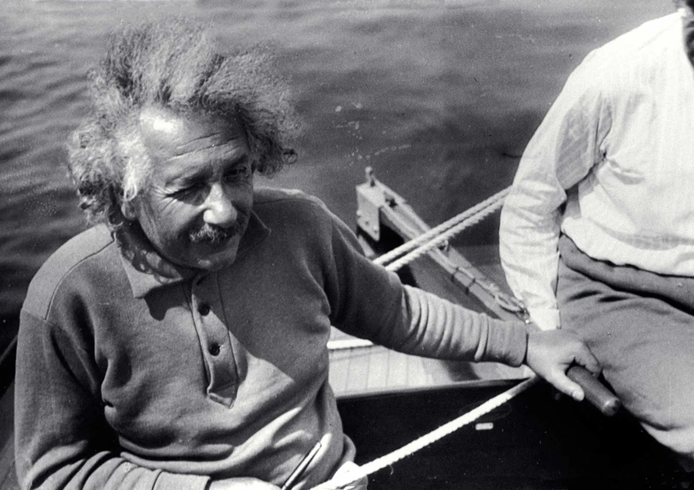
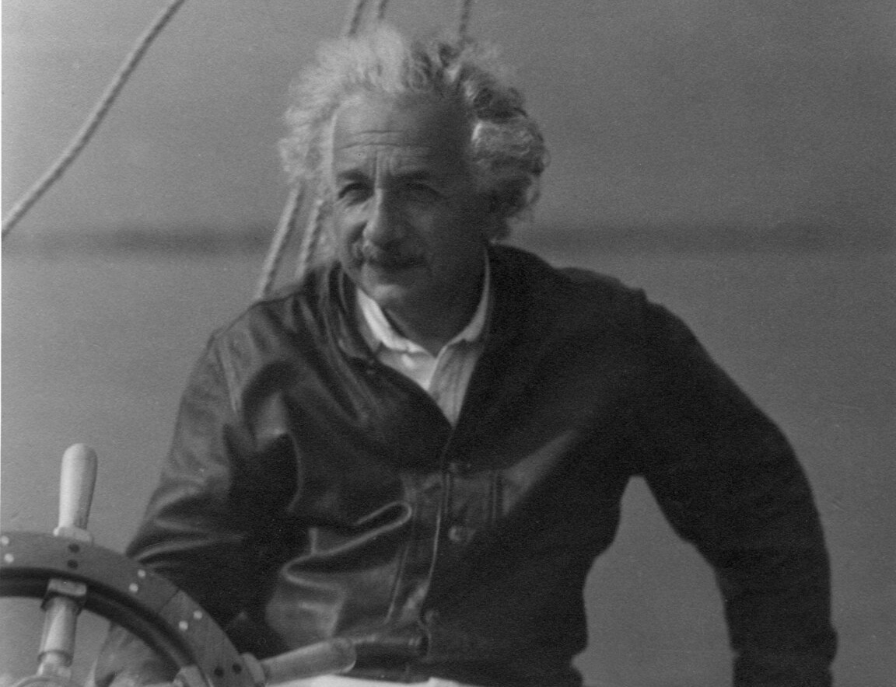
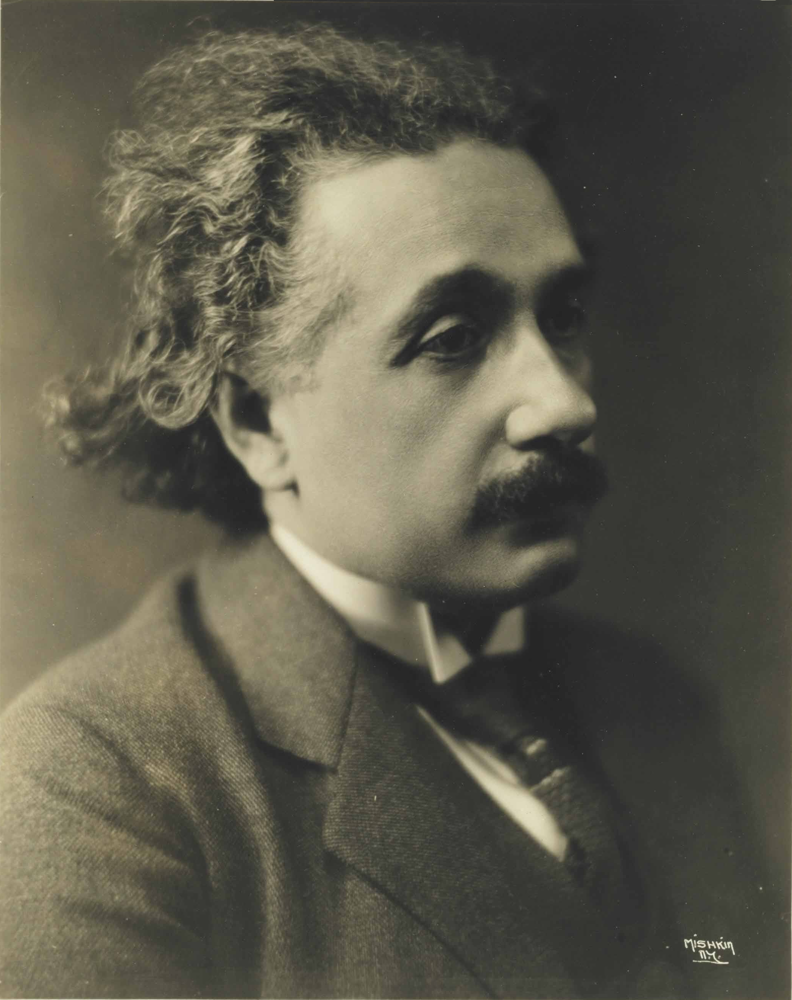
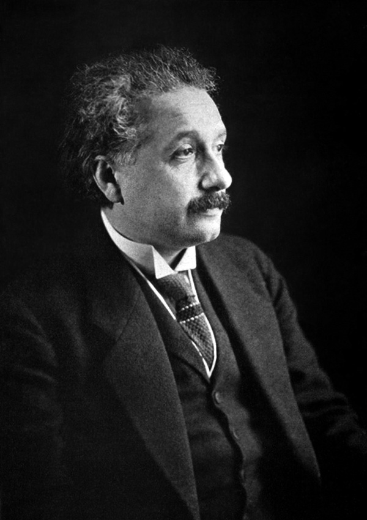
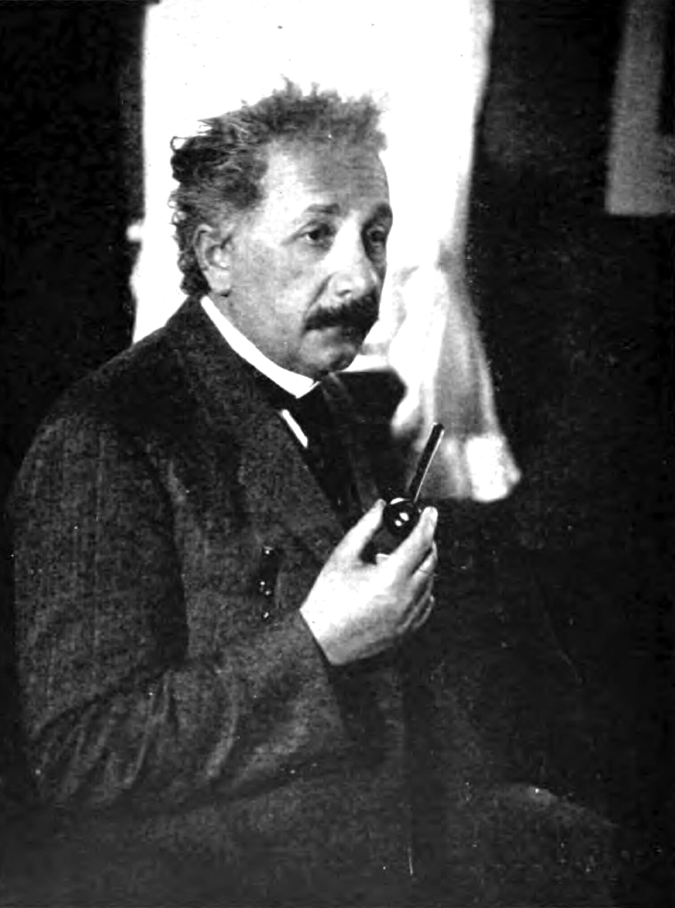